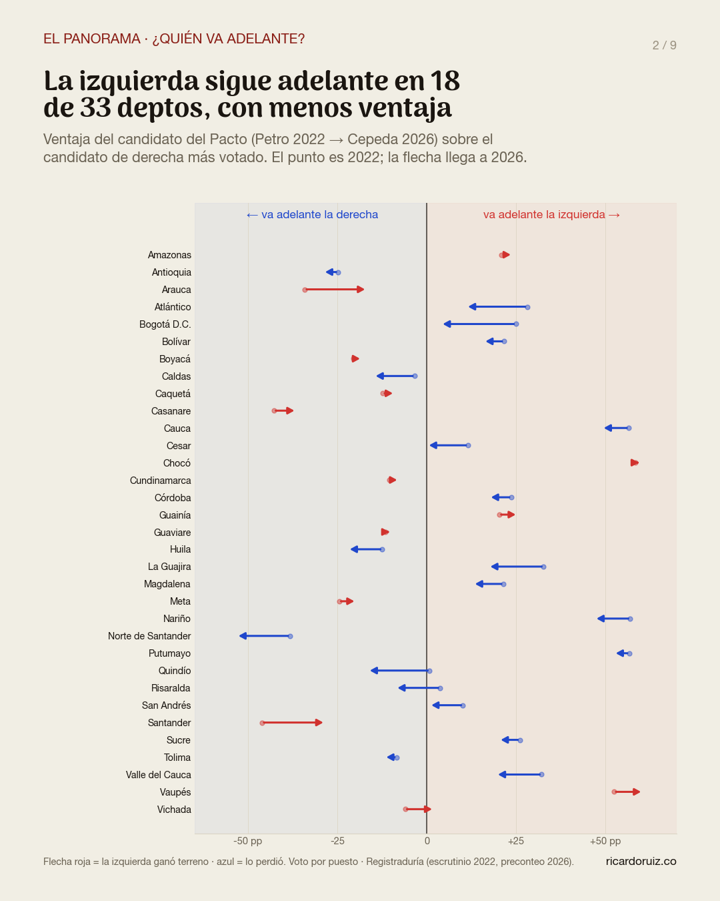
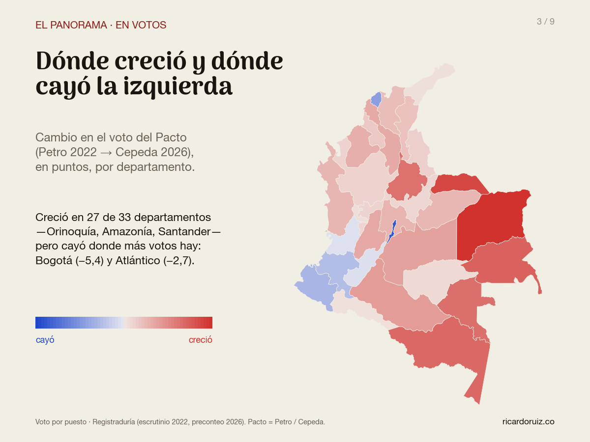
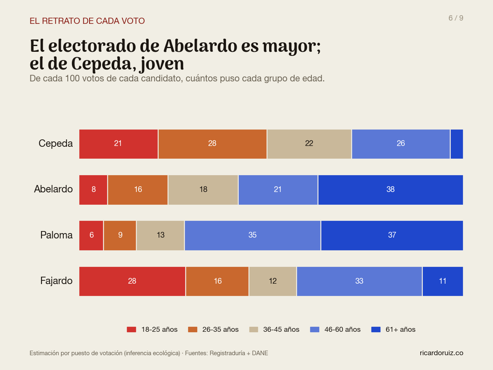
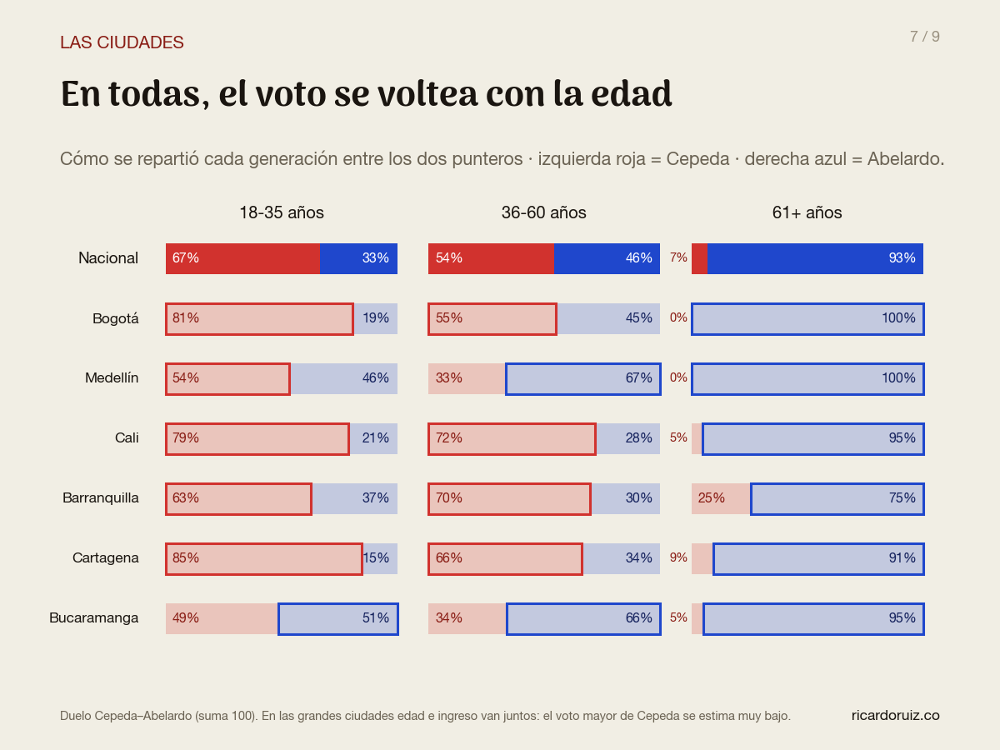
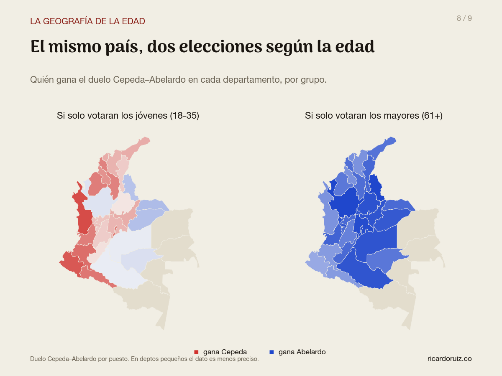

Colombia votó por edades: Cepeda ganó los jóvenes, Abelardo los mayores
El voto es secreto, pero la Registraduría publica cuántas personas votaron por edad en cada puesto. Cruzamos ese dato con los resultados de la primera vuelta y reconstruimos, con inferencia ecológica, cómo votó cada generación — a nivel nacional, por departamento y en las seis ciudades principales.
La primera vuelta del 31 de mayo fue, sobre todo, un choque de generaciones. Iván Cepeda se llevó cerca de 6 de cada 10 votos entre los menores de 25 y apenas el 7% entre los mayores de 60. Abelardo De La Espriella hizo el camino exactamente inverso: 23% entre los jóvenes y cerca de 8 de cada 10 votos entre los mayores. De hecho, Cepeda puntea en todas las franjas de edad… menos en la de los mayores de 60, donde Abelardo se dispara — y esa franja, que pesa una quinta parte del electorado y es la que más crece, le dio la delantera nacional.
¿Quién va adelante en cada departamento?
Antes de la edad, el tablero. Medimos la ventaja del candidato del Pacto sobre el candidato de derecha más votado en cada departamento — Petro contra el mejor entre Fico y Rodolfo en 2022; Cepeda contra Abelardo en 2026. La izquierda sigue adelante en 18 de 33 departamentos (Caribe, Pacífico, suroccidente), pero frente a una derecha ya unificada su ventaja se encogió en 20 de los 33. El caso más dramático es Bogotá: la izquierda sigue ganando la ciudad, pero su colchón pasó de +25 puntos a apenas +4.

En votos, la izquierda no se hundió — pero cayó donde más pesa
¿Y en votos propios? Ahí el resultado es contraintuitivo: Cepeda igualó o superó la votación de Petro en 27 de 33 departamentos — creció en la Orinoquía, la Amazonía y Santander. Pero cayó justo donde más votos hay: Bogotá (−5,4 puntos) y Atlántico (−2,7). El saldo: la izquierda quedó casi clavada en su marca nacional (40,5% → 41,2%). Lo que cambió el resultado no fue un derrumbe de la izquierda: fue que la derecha, dividida en 2022 entre Fico y Rodolfo, esta vez votó unida detrás de un solo nombre.

El choque generacional
Aquí está el corazón del análisis. Estimamos el voto de cada candidato dentro de cada grupo de edad: la línea de Cepeda baja con la edad (60% → 7%) y la de Abelardo sube (23% → 79%), casi en espejo. Paloma Valencia, tercera en la elección, concentra su fuerza después de los 45. Y Fajardo muestra el perfil más curioso: su mejor franja en 2026 fue la más joven — el opuesto exacto de su electorado de 2022.

La edad se heredó de 2022 — y se hizo más extrema
Este patrón no nació en 2026. Corrimos el mismo modelo sobre la primera vuelta de 2022 (ahí la edad de los votantes es observada, no proyectada) y la conclusión es nítida: cada bloque heredó la edad de su antecesor. Cepeda calcó el perfil joven de Petro — 60% vs 62% entre los 18-25. Abelardo heredó el perfil mayor de Fico y lo amplificó: Fico tuvo 69% de los mayores de 60; Abelardo, 79%. La brecha generacional no es nueva; lo nuevo es que se volvió más profunda.

El retrato de cada electorado
Visto desde el otro lado — ¿de qué edades es el voto de cada candidato? — el contraste es igual de fuerte. El 49% de los votos de Cepeda viene de menores de 36 años, y solo el 3% de mayores de 60. El 38% de los votos de Abelardo es de mayores de 60. Paloma tiene el electorado más envejecido: 7 de cada 10 de sus votos son de personas de más de 45 años. Y el electorado de Fajardo 2026 es, después del de Cepeda, el más joven: 28% de sus votos son de menores de 26.

Pasa en todas las ciudades
¿Es un fenómeno nacional o de unas regiones? Lo probamos ciudad por ciudad con el duelo directo entre los dos punteros. En Bogotá, Medellín, Cali, Barranquilla, Cartagena y Bucaramanga el voto se voltea de joven a mayor — en todas. Con matices que cuentan su propia historia: en Cartagena y Cali, Cepeda barrió entre los jóvenes (85% y 79% del duelo); en Medellín y Bucaramanga la pelea joven fue pareja — Abelardo incluso puntea entre los jóvenes bumangueses. Pero entre los mayores de 60, en las seis ciudades, ganó Abelardo.

Dos países según la edad
Llevado al mapa, el hallazgo da para dos países distintos. Si solo votaran los jóvenes (18-35), Cepeda ganaría el duelo en casi todo el país — con las excepciones reveladoras de Antioquia y los Llanos, donde Abelardo aguanta incluso entre los jóvenes. Si solo votaran los mayores de 60, Abelardo ganaría en todos los departamentos — hasta en Nariño, Cauca y Sucre, los bastiones históricos de la izquierda, donde es donde menos mal le va a Cepeda con los mayores, pero no le alcanza.

Cómo lo hicimos (y qué no se puede afirmar)
Esto no es una encuesta ni son datos individuales: el voto sigue siendo secreto. Es inferencia ecológica — el método estándar en la literatura electoral (Goodman 1953; Duncan & Davis 1953; King 1997) para estimar comportamientos de grupo a partir de agregados. La base:
- La edad de los votantes reales. La Registraduría nos entregó cuántas personas votaron por mesa, según edad y sexo, en 2018 y 2022 (no dice por quién — ese dato no existe). Lo agregamos a los ~12.400 puestos de votación del país.
- La proyección a 2026. Ese desglose aún no existe para 2026, así que lo proyectamos: perfil etario 2022 de cada puesto + envejecimiento poblacional del DANE + total real de votantes 2026 de cada puesto (raking IPF). Solo se modela la mezcla interna; los totales son dato. El método, probado proyectando 2018→2022, erró en promedio 0,3 puntos por banda a nivel nacional.
- La estimación. Mínimos cuadrados ponderados con restricciones (los porcentajes de cada grupo suman 100 y viven entre 0 y 100), estimados por estratos regionales, con intervalos de confianza por bootstrap de municipios. La consistencia es exacta: el modelo reproduce el resultado nacional al decimal.